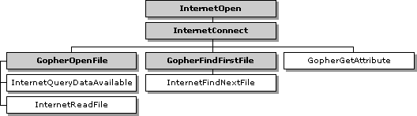

| ||||||
The Win32® Internet Gopher functions create and use Internet Gopher utilities to access information on Gopher servers worldwide.
Gopher functions, like the FTP functions, cannot be used through a CERN type proxy because CERN proxies recognize only HTTP. Applications that need to access a Gopher server through a CERN proxy should use InternetOpenUrl to access the resource directly. For more information on direct resource access, see Accessing URLs Directly.
The following diagram shows the relationship of Win32 Internet functions used for the Gopher protocol. The shaded boxes represent functions that return HINTERNET handles, while the plain boxes represent functions that use the HINTERNET handle created by the function on which they depend.

For more information on HINTERNET handles and the handle hierarchy, see Appendix A: HINTERNET Handles.
The following Win32 Internet functions are used during Gopher sessions. These functions are not recognized by CERN proxies. Applications that must function through CERN type proxies should use InternetOpenUrl and access the resources directly. For more information on direct resource access, see Accessing URLs Directly.
| GopherCreateLocator | Forms a Gopher locator for use in other Gopher function calls. |
| GopherFindFirstFile | Starts enumerating a Gopher directory listing. This function requires a handle created by InternetConnect. |
| GopherGetAttribute | Retrieves attribute information on the Gopher object. This function requires a handle created by InternetConnect. |
| GopherGetLocatorType | Parses a Gopher locator and determines its attributes. |
| GopherOpenFile | Starts retrieving a Gopher object. This function requires a handle created by InternetConnect. |
The Win32 Internet function GopherCreateLocator allows applications to create Gopher locators.
This function accepts the host address, server port used by the host, display string, selector string, Gopher type, address of the buffer that stores the locator, and the buffer length. If the buffer address is set to NULL, the buffer length needed to store the locator is stored in the buffer length variable. If the buffer size is insufficient, the function fails. The GetLastError function returns ERROR_INSUFFICIENT_BUFFER and stores the necessary length in the buffer length variable.
The display string contains the Gopher document or directory to be displayed. If this parameter is NULL, the function returns the default directory for the Gopher server.
The selector string contains the information that the application is searching for in the Gopher server. This parameter can be set to NULL.
Gopher types define the resource type the selector string is looking for; they can also define whether this is a Gopher or Gopher+ request. The following values are valid Gopher types.
| GOPHER_TYPE_ASK | Ask+ item. |
| GOPHER_TYPE_BINARY | Binary file. |
| GOPHER_TYPE_BITMAP | Bitmap file. |
| GOPHER_TYPE_CALENDAR | Calendar file. |
| GOPHER_TYPE_CSO | CSO telephone book server. |
| GOPHER_TYPE_DIRECTORY | Directory of additional Gopher items. |
| GOPHER_TYPE_DOS_ARCHIVE | MS-DOS® archive file. |
| GOPHER_TYPE_ERROR | Error condition indicator. |
| GOPHER_TYPE_GIF | GIF graphics file. |
| GOPHER_TYPE_GOPHER_PLUS | Gopher+ item. |
| GOPHER_TYPE_HTML | HTML document. |
| GOPHER_TYPE_IMAGE | Image file. |
| GOPHER_TYPE_INDEX_SERVER | Index server. |
| GOPHER_TYPE_INLINE | Inline file. |
| GOPHER_TYPE_MAC_BINHEX | Macintosh file in BINHEX format. |
| GOPHER_TYPE_MOVIE | Movie file. |
| GOPHER_TYPE_PDF | PDF file. |
| GOPHER_TYPE_REDUNDANT | Duplicated server indicator. The information contained within is a duplicate of the primary server. The primary server is defined as the last directory entry that did not have a GOPHER_TYPE_REDUNDANT type. |
| GOPHER_TYPE_SOUND | Sound file. |
| GOPHER_TYPE_TELNET | Telnet server. |
| GOPHER_TYPE_TEXT_FILE | ASCII text file. |
| GOPHER_TYPE_TN3270 | TN3270 server. |
| GOPHER_TYPE_UNIX_UUENCODED | UUENCODED file. |
| GOPHER_TYPE_UNKNOWN | Unknown item type. |
Enumeration of a directory on a Gopher server requires the creation of an HINTERNET handle by GopherFindFirstFile. This handle is a branch of the Gopher session handle created by InternetConnect. GopherFindFirstFile locates the first file or directory on the server and returns it in a GOPHER_FIND_DATA structure. Use InternetFindNextFile until it fails, returning ERROR_NO_MORE_FILES. This method finds all subsequent files and directories on the server. For more information on InternetFindNextFile, see Finding the Next File.
To determine the resource type retrieved by GopherFindFirstFile or InternetFindNextFile, check the GopherType member of the GOPHER_FIND_DATA structure. The following values are valid Gopher types
| GOPHER_TYPE_ASK | Ask+ item. |
| GOPHER_TYPE_BINARY | Binary file. |
| GOPHER_TYPE_BITMAP | Bitmap file. |
| GOPHER_TYPE_CALENDAR | Calendar file. |
| GOPHER_TYPE_CSO | CSO telephone book server. |
| GOPHER_TYPE_DIRECTORY | Directory of additional Gopher items. |
| GOPHER_TYPE_DOS_ARCHIVE | MS-DOS® archive file. |
| GOPHER_TYPE_ERROR | Error condition indicator. |
| GOPHER_TYPE_GIF | GIF graphics file. |
| GOPHER_TYPE_GOPHER_PLUS | Gopher+ item. |
| GOPHER_TYPE_HTML | HTML document. |
| GOPHER_TYPE_IMAGE | Image file. |
| GOPHER_TYPE_INDEX_SERVER | Index server. |
| GOPHER_TYPE_INLINE | Inline file. |
| GOPHER_TYPE_MAC_BINHEX | Macintosh file in BINHEX format. |
| GOPHER_TYPE_MOVIE | Movie file. |
| GOPHER_TYPE_PDF | PDF file. |
| GOPHER_TYPE_REDUNDANT | Duplicated server indicator. The information contained within is a duplicate of the primary server. The primary server is defined as the last directory entry that did not have a GOPHER_TYPE_REDUNDANT type. |
| GOPHER_TYPE_SOUND | Sound file. |
| GOPHER_TYPE_TELNET | Telnet server. |
| GOPHER_TYPE_TEXT_FILE | ASCII text file. |
| GOPHER_TYPE_TN3270 | TN3270 server. |
| GOPHER_TYPE_UNIX_UUENCODED | UUENCODED file. |
| GOPHER_TYPE_UNKNOWN | Unknown item type. |
The Win32 Internet functions GopherOpenFile and InternetReadFile allow applications to download a Gopher resource.
To begin downloading a resource, GopherOpenFile must create an HINTERNET handle off the Gopher session handle returned by InternetConnect. After the handle is created, InternetReadFile can be used to download the resource. For more information on using InternetReadFile, see Reading Files.
Did you find this topic useful? Suggestions for other topics? Write us!
© 1999 Microsoft Corporation. All rights reserved. Terms of use.